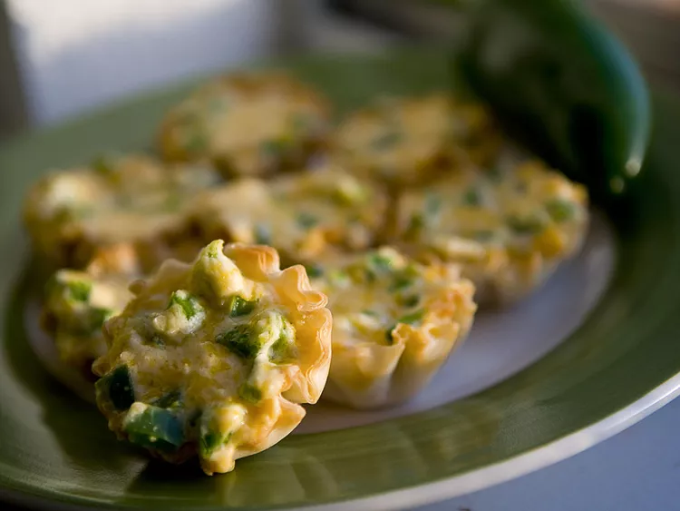

Jalapeno Popper Cups

TDidn't have enough Jalapenos to make full out poppers, but improvised for a creamy and spicy appetizer. You'll want to eat them right away, but they will be molten hot so be careful!
- 12 mini phyllo tart shells
- 4 ounces cream cheese, softened
- ½ cup shredded Cheddar cheese
- 2 jalapeno peppers, seeded and chopped
- 1 tablespoon hot pepper sauce
- bacon bits
Home